| Item | Description | Prices(php) | |
|---|---|---|---|
| Plaster | 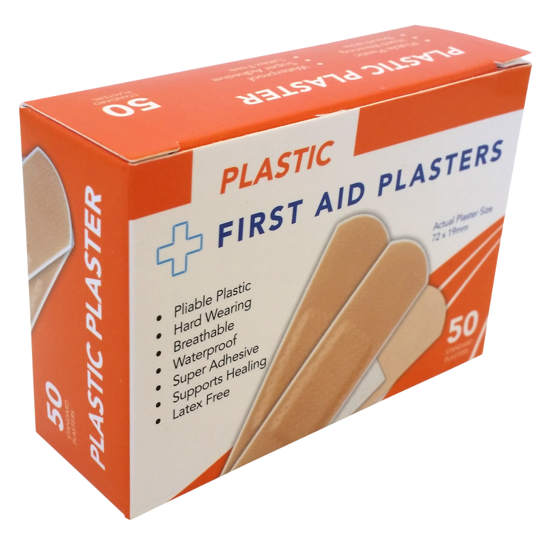 | Plasters. Used for small cuts and grazes. | 69.00 |
| Triangular Bandages | 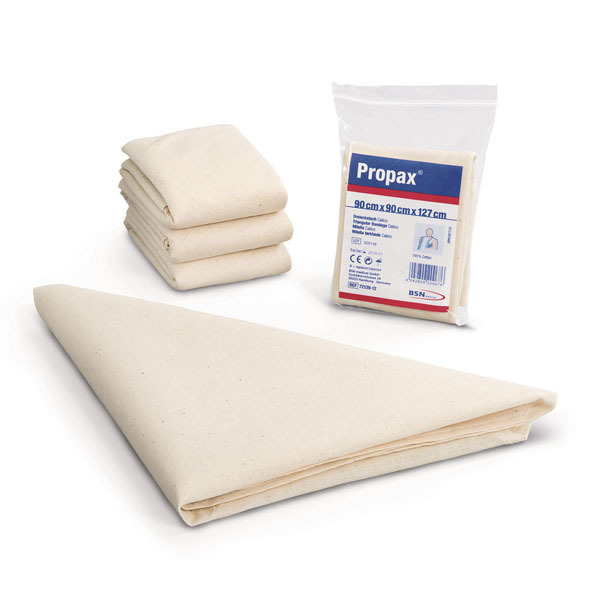 | Triangular bandages, also known as Cravat Bandage, is a piece of cloth put into right-angled triangles and often provided woth safety pins to secure it in a place | 49.00 |
| Crepe Rolled Bandages | 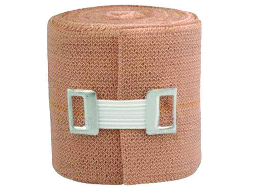 | An elastic bandage used to create localized pressure. It is commonly used to treat muscle spains and strains by reducong the flow of blood to a particular area by the application of even stable pressure which can restrict swelling at the place of injury. | 79.99 |
| Safety Pins | 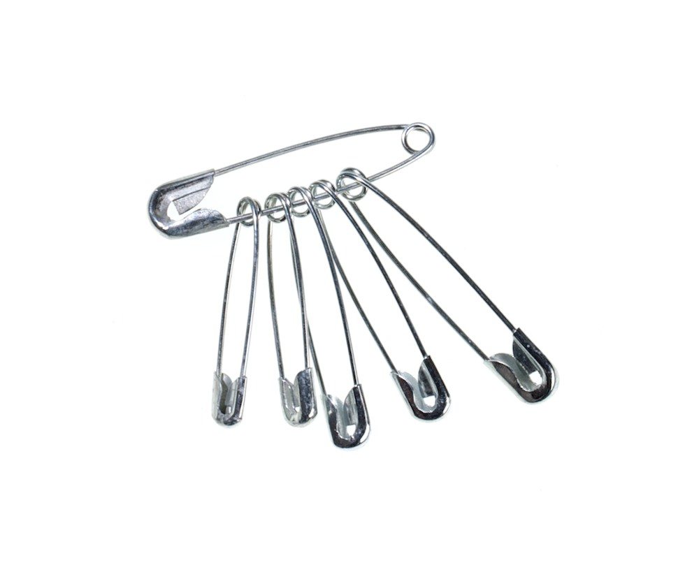 | Safety Pins has a number of uses in first aid. It is commonly used to secure a bandana over a wounded and bleeding arm or leg. It can be used to help keep a severe wound closed in place of stitches in dire circumstances. | 19.99 |
| Disposable Sterile Gloves | 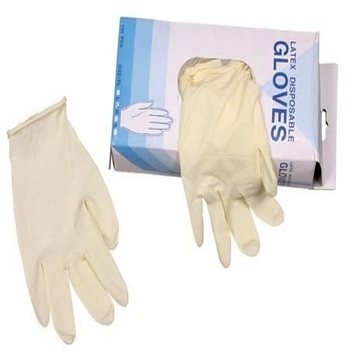 | Disposable Sterile Gloves is a must need equipment to prevent any germs/bacteria in our hands that can infect the wound. | 49.00 |
| Sterile Gauze | 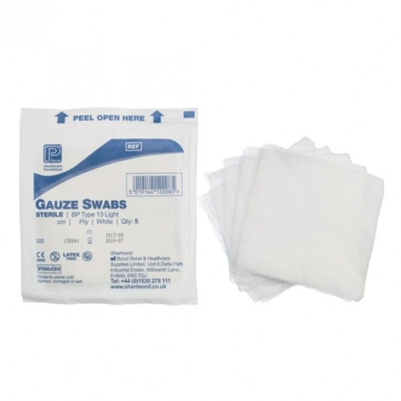 | Sterile Gauze is designed for open wounds. It prevents the wound from infecting. | 49.00 | Alcohol free Cleansing Wipes | 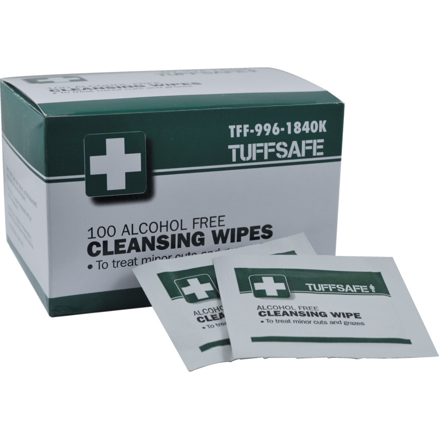 | Individually-wrapped alcohol free cleansing wipes for cleaning the area around a wound, or to clean skin before applying an adhesive tape or dressing. | 149.00 |
| Surgical/Medical tape | 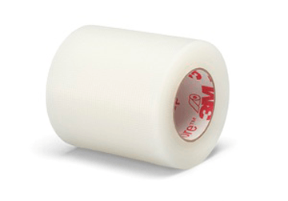 | Surgical/Medical tape is a type of pressure-sensitive adhesive tape used in medicine and first aid to hold a bandage or otger dressing onto a wound. | 49.00 |
| Thermometer | 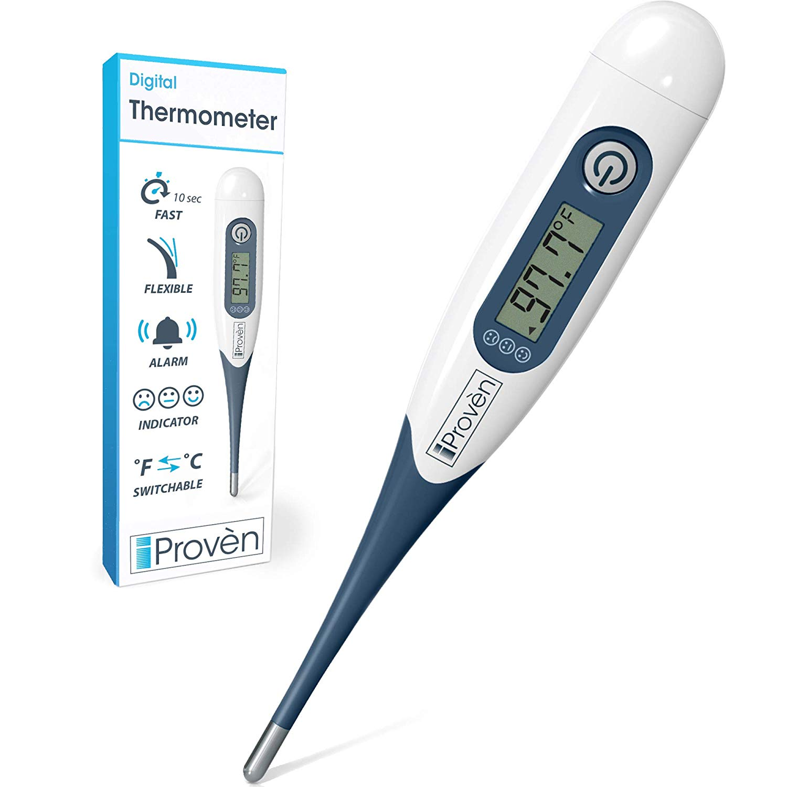 | A Thermometer for measuring body temperature. | 229.00 |
| Paracetamol(tablet) | 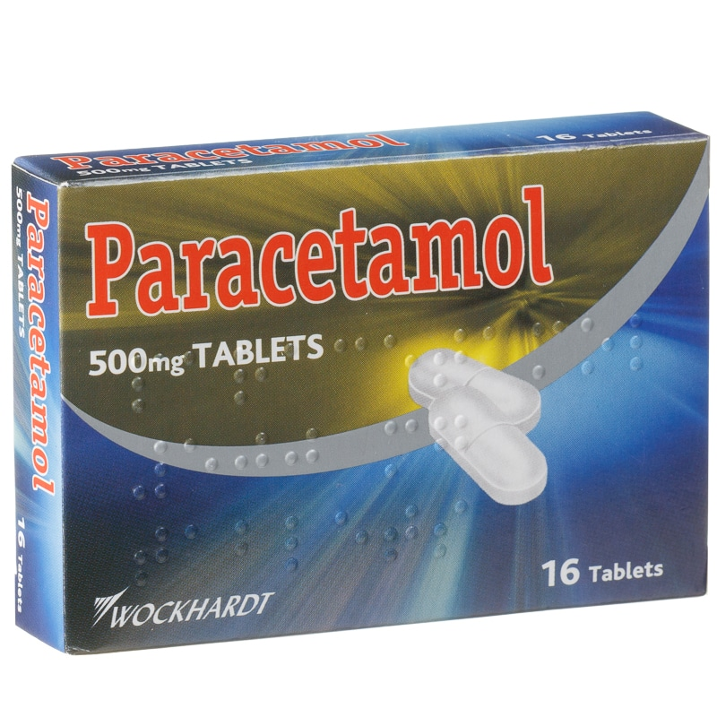 | Common Painkiller | 49.99/bundle |
| First Aid Kit Package | 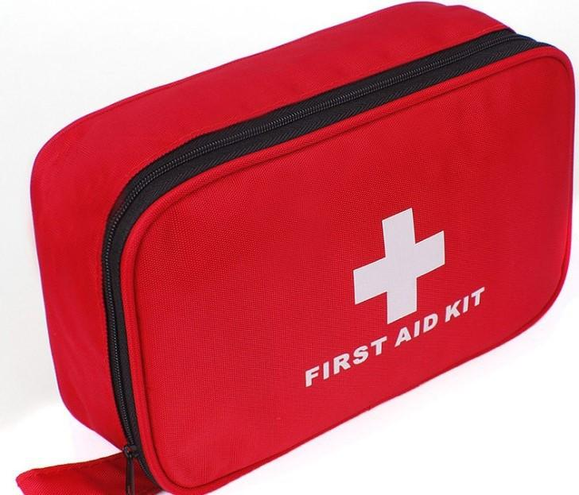 | Contains all the equipment on this list. 1 Box of plasters(5pcs) 1 box of Sterile Gauze(5pcs) 2 triangular bandages 1 box of Creped rolled bandages(1 roll) 5 safety pins 3 pairs of Sterile Gloves 1 box of Cleansing Wipes(10pcs) 1 roll of Medical Tape 1 Thermometer 1 bundle of Paracetamol | 749.99 |
We do not cancel any orders. Please be sure of buying in any of our products.
Please disregard any deliveries that contains none on our list and report it to us immediately.
Plaster:
Sterile Gauze:
Triangular Bandages:
Crepe Rolled Bandages:
Safety pins:
Sterile Gloves:
Cleansing wipes:
Medical Tape:
Thermometer:
Paracetamol:
First Aid Kit Package:
LastName: FirstName:
Address: Postal Code:
Email:
Telephone number: